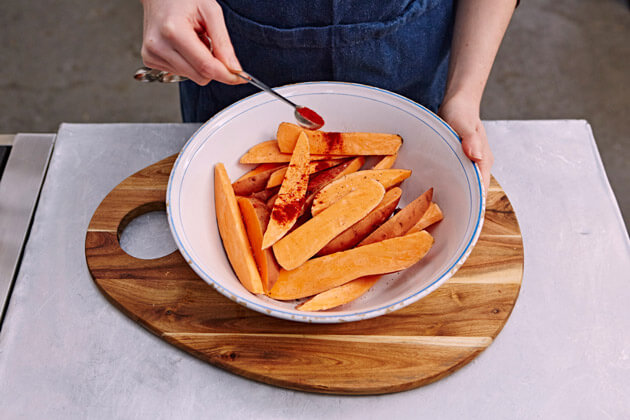
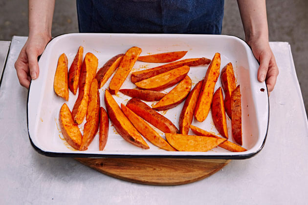
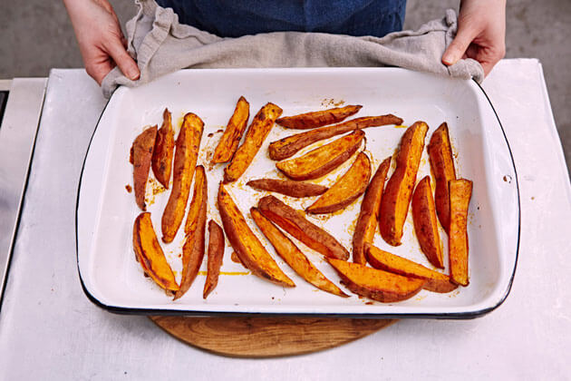

2 pounds orange fleshed sweet potatoes (about 3 large) 3 tablespoons extra virgin olive oil 1 1/2 teaspoons kosher salt 1 to 2 tablespoons spice or spice combination of your choice: chipotle powder, smoked paprika, Chinese five-spice, pumpkin pie spice, garam masala, Cajun seasoning, etc.
Method Preheat oven and roasting pan: Preheat oven to 450°F. (For more crispiness, preheat your oven to 500°F.) Place a roasting pan or heavy duty baking sheet (one that can take high heat) in the oven to preheat. Peel and cut sweet potatoes into wedges: Peel the sweet potatoes and cut off the ends. Cut the potatoes in half lengthwise and then, if they are very long, in half crosswise. Cut each piece into 1/4 to 1/2-inch thick wedges. Alternately, you can slice the peeled sweet potato into disks either with a mandoline or a sharp knife. Sweet potatoes peeled and halved on a cutting board to make a sweet potato fry recipe. Sweet potato sliced into wedges to make homemade sweet potato fry recipe. Toss with oil, salt, spices: Put the sweet potatoes into a large bowl and add the oil. Mix well to combine. Sprinkle with salt and spices of your choice. Use your hands to mix well, so all pieces are coated with oil and spices. Tossing sweet potato wedges in seasoning in a glass bowl. Spread out onto preheated pan: Remove the preheated baking sheet from the oven. Carefully spread the sweet potatoes out in a single layer on the baking sheet. (Watch out, the pan is hot!) Sweet potato wedges seasoned on a baking sheet. Bake: Bake for 15 to 25 minutes. After the first 10 minutes, remove the baking sheet from the oven and use tongs to turn over all of the sweet potato pieces. Return to the oven and bake for another 5 to 15 minutes, or until they are well browned. Cooking time depends on the temperature of the oven (500°F will need less cooking time than 450°F) and the size and thinness of the sweet potato wedges. The browner they are, the crispier they will be, but there is a fine line between browned and burnt beyond edibility. Even if they get really dark, they should still be good because of the natural sugars of the sweet potatoes caramelizing. So watch carefully.
  